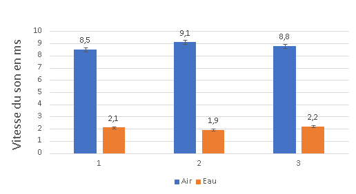
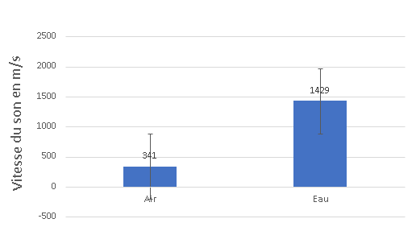

Étude de la vitesse du son dans l'air et dans l'eau
Classe: 1B
- 1 Résumé1
- 2 Introduction et Problématique2
- 3 Matériel utilisé3
- 4 Protocole expérimental4
- 4.1 Dans l'air (21 °C)4.1
- 4.2 Dans l'eau4.2
- 5 Résultats5
- 6 Calculs6
- 7 Graphique7
- 8 Analyse8
- 9 Conclusion9
- 10 Annexe10
- 11 Sources d'erreur11
- 12 Remerciement12
1 Résumé
Le but de cette expérience est de comparer la vitesse du son dans l'air et dans l'eau avec deux téléphones utilisant l'application Fizziq un téléphone émetteur qui produit le son, et un téléphone capteur qui enregistre le son lors du commencement. Lors de cette expérience nous avons obtenus que le son se propage beaucoup plus vite dans l'eau que dans l'air.
2 Introduction et Problématique
Le son se propage par ondes mécaniques qui nécessitent un milieu matériel et que
l'air étant moins dense que l'eau, nous avons poser une question et essayer de comparer la vitesse du son dans l'air et dans l'eau.
Pourquoi la vitesse du son dans l'air est plus vite que dans l'eau ?
3 Matériel utilisé
Nous allons utiliser le matériel suivant :
- téléphones (waterproof) avec l'application Fizziq. (capteur)
- téléphones (waterproof) avec l'application Fizziq. (émetteur)
- Un récipient rempli d'eau. (Piscine)
- Un mètre ruban.
4 Protocole expérimental
4.1 Dans l'air (21 °C)
-Le téléphone capteur est placé à 3 mètres du téléphone émetteur.
-Le téléphone émetteur émet un son.
-L'application Fizziq mesure le temps de propagation.
-Trois mesures sont réalisées.
4.2 Dans l'eau
-Le téléphone est placé dans l'eau (Piscine) et sert de capteur.
-Le téléphone émetteur reste à 3 mètres.
-L'application Fizziq mesure le temps de propagation.
-Trois nouvelles mesures sont réalisées.
5 Résultats
Les temps de propagation mesurés sont rassemblés dans le Tableau.
| Milieu | Mesure 1 (ms) | Mesure 2 (ms) | Mesure 3 (ms) |
|---|---|---|---|
| Air | 8,5 | 9,1 | 8,8 |
| Eau | 2,1 | 1,9 | 2,2 |
6 Calculs
Formule du temps moyen:
Temps moyen dans l'air:
Temps moyen dans l'eau:
Formule de la vitesse utilisée avec une distance de 3m:
Vitesse dans l'air :
Vitesse dans l'eau :
Formule de l'écart-type :
Ecart-type dans l'air :
= √( 0,09 + 0,09 + 0 ) / 3
= √0,06
≈ 0,24 ms
Ecart-type dans l'eau :
= √( 0,001 + 0,029 + 0,017 ) / 3
= √0,016
≈ 0,12 ms
7 Graphique
Graphique des temps de propagation du son dans l'air et dans l'eau

Graphique de la vitesse du son dans l'air et dans l'eau

8 Analyse
Les résultats montrent que le son se propage environ 4 fois plus vite dans l'eau que dans l'air.
Cela s'explique par le fait que les molécules de l'eau sont beaucoup plus proches les unes des autres
que dans l'air, ce qui transmet mieux les vibrations.
L’écart-type montre que les mesures sont fiables car dans l'air l'écart-type est d'environ 0,24 ms et l'écart-type dans l'eau est d'environ 0,12 ms.
Les résultats obtenus dans l’eau sont plus réguliers car l'écart de 0.12 ms varie peu de marge contèrement dans l'air d'écart 0.24 ms donc plus de temps pendant que des perturbations peuvent fausser la mesure
, ce qui indique une meilleure reproductibilité pour dans l'eau rendant de l’expérience dans ce milieu.
9 Conclusion
Cette expérience a permis de comparer la vitesse du son dans deux milieux différents entre l'air et l'eau. Nous avons trouvé dans l'air 341 m/s et dans l'eau 1429 m/s. Donc la problématique que nous avons posée est fausse car la vitesse du son dans l'eau va beaucoup plus vite que la vitesse du son dans l'air.
10 Annexe
Figure 1: Montage expérimental de l'air

Figure 2: Montage expérimental de l'eau (2 sujets)

11 Sources d'erreur
- Seulement trois mesures réalisées.
- Positionnement des téléphones dans le montage de l'eau imprécis.
- Température de l'eau non contrôlée.
12 Remerciement
Je remercie sincèrement mon oncle pour son aide et sa gentillesse de m'avoir permis d’utiliser sa piscine.